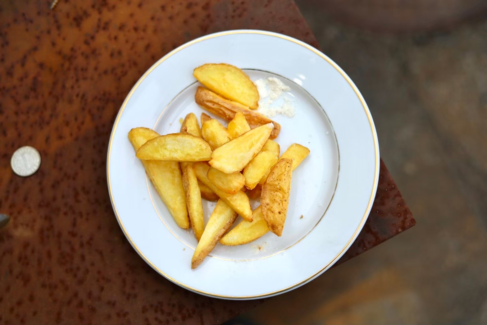
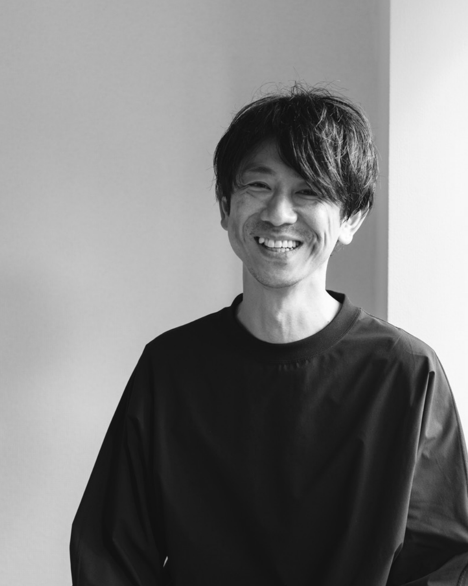

ふつうを研ぎ澄ますことが、一番のスペシャリティだと思います。
Philosophy
FUNCTIONAL HONESTY
機能への誠実さ
時代をこえて長く続いてきたもの。
定番として使われ続けてきたもの。
その普遍性には、流行や商業主義に迎合しない凛とした強さ、デザインよりも機能的な美しさがある。
機能、すなわち使われるということが思想の根幹にあるからだと思う。
機能には嘘がない。機能とは現実に応えること。現実に応えるとは、誠実であるということ。
誠実なものが、使われ続ける。
ふつうを研ぎ澄ますことが、一番のスペシャリティだと思います。
そういう飲食をつくりたいし、そういう会社でありたい。

Vision
長く使われ続ける飲食をつくる。
LONG LIFE FOOD, MADE TO BE USED.
Mission
種をまき、土をつくり、耕す。
WE PREPARE THE GROUND.
つくった人がいなくなっても、
育っていくように。
Values
-
01NOT BEAUTIFUL, BUT HONEST.
美しさより、正直さを。
-
02NOT ART, BUT TOOLS.
作品じゃなく、道具として。
-
03NOT FASHION, BUT FUNCTION.
流行より、機能を。
-
04STAY IN THE FIELD.
現場に浸かって、聞き続ける。
-
05UPDATE THE STANDARD.
ふつうを、更新し続ける。
BUSINESS
Consulting／ 受託
クライアントの店と経営の素地を耕す。
商品開発／オペレーション設計／購買・食材開拓／HR Design／経営と現場の翻訳
店ごとに必要な深さで入り、自走できる状態をつくる。成果物は、繁盛店やマニュアルではなく、自分たちで続けていけること。
Original／ 自社発準備中
長く続く飲食ブランドを、立ち上げる。
LAUNCH 2026 WINTER
Tools／ 道具構想
料理人に依存しない再現性をつくる道具・装置の企画とディレクション
WORKS
-
Consulting
BBONBON WINESTAND（名古屋）
-
D
DE FRITES STAAN HARAJUKU（東京）
DE FRITES STAAN（京都）
-
H
HEIM COFFEE（東京）
-
O
ORIOLE Nectar and Bites（東京etc）
OSU PUDDING LABORATORIES（名古屋）
-
W
WORK&FIKA（宮崎）
-
ま
まちノ食堂（横浜）
まちノ麦酒パーラー（横浜）
-
Event
FFISH&FRITES PJ（東京）@新宿サザンテラス
-
K
KINAN FISH PJ（東京）@CHE333
-
U
UNUSED FISH PJ（和歌山）@すさみ町カンファレンス
-
Original
LAUNCH 2026 WINTER
Contact
IF THIS RESONATES,
COMPANY
食の企画と実装を、retroduction とのアライアンスで。
mssbworks
株式会社ムササビ
代表取締役 渡部龍哉
mssbworks
CEO/Food Director
Tatsuya Watabe
〒151-0051 東京都渋谷区千駄ヶ谷3-6-5 司マンション302

株式会社リトロダクション
代表取締役 中島晋平
retroduction
CEO/Project Director
Shinpei Nakajima
〒151-0051 東京都渋谷区千駄ヶ谷3-8-4 メゾンジャルダン503